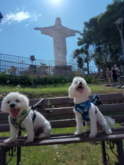

Serra Negra - SP
Serra Negra foi elevada a cidade em 7 de setembro de 1859, porém foi fundada em 23 de setembro de 1828, por Lourenço Franco de Oliveira, data, também, em que foi feita a concessão de Capela Curada a Serra Negra. Por este motivo, seu aniversário é comemorado a em 23 de setembro – data da fundação.
Possui uma área de 203,010 km. estando a uma altitude de 925 metros.
População: 29452 habitantes (2020).
Rodeada por montanhas da Serra da Mantiqueira, a vegetação é exuberante, compondo um cenário de extraordinária beleza natural em meio ao Circuito das Águas Paulista.
Além de encantadora, Serra Negra é uma cidade extremamente Pet Friendly. A maioria dos estabelecimentos aceita pets e os recebem muito bem.
Optamos em ficar numa linda e aconchegante casa, onde fomos super bem recebidos.
Adoramos passear pelas cidades e Serra Negra nos proporcionou passeios incríveis.
 Praça Sesquicentenário
Praça Sesquicentenário Na praça
Na praça- Cristo Redentor Serra Negra
 Parque Teleferico
Parque Teleferico Pet Park
Pet Park Praça Fórum
Praça Fórum Rua Principal
Rua Principal Fontana Di Trevi
Fontana Di Trevi Disneylândia dos Robôs
Disneylândia dos Robôs Rancho
Rancho- Chopp 40
 D' Jones
D' Jones